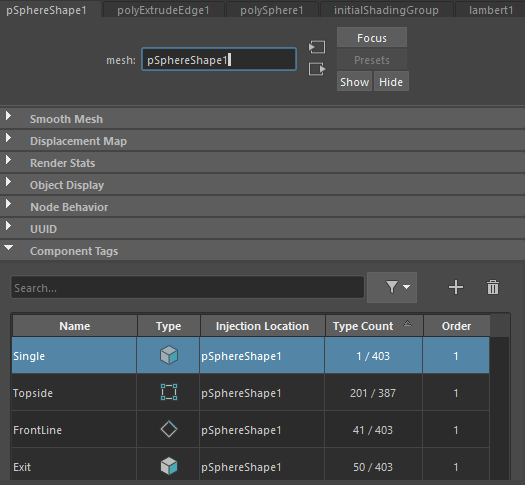
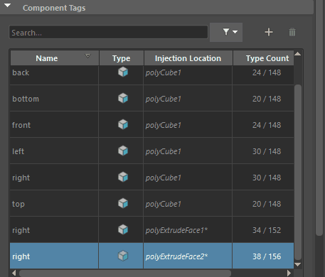

- 若要查看“属性编辑器”(Attribute Editor)的“组件标记”(Component Tags)构件，请选择几何体，然后在“属性编辑器”(Attribute Editor)中单击其形状节点选项卡（例如 pCube1），然后展开“组件标记”(Component Tags)区域。

“属性编辑器”(Attribute Editor)中的“组件标记”(Component Tags)表
可在属性编辑器(Attribute Editor)中使用此表编辑来自形状节点的“组件标记”(Component Tags)成员身份。若要将“组件标记”(Component Tags)添加到对象，请参见为几何体指定组件标记。
“组件标记”(Component Tags)属性以表格格式显示在“属性编辑器”(Attribute Editor)的“组件标记”(Component Tags)构件中。单击列标题可对条目进行排序。
| 列名 | 功能 |
|---|---|
| 搜索(Search)字段 | 输入名称以查找指定的组件标记。您还可以使用表达式进行搜索。请参见组件标记表达式。 |
过滤器 
|
单击以展开菜单，从中可以将搜索范围限制为以下几何体类型：
注： 默认情况下，此选项处于活动状态，并仅显示最新的标记。禁用“仅最终”(Final Only)以查看之前创建的具有相同名称的所有标记。
|
添加(Add) 
|
单击以将条目添加到“组件标记”(Component Tags)表。如果选择了组件，它们将包含在新标记中。请参见为几何体指定组件标记。 |
删除(Remove) 
|
从场景中删除当前选定的组件标记。 |
| 名称 | 相应组件标记的名称。
旁边带有 *（星号）的名称表示已修改来自上游的组件标记。 |
| 类型 | 此列中的图标对应于组件标记类型：
|
| 注射位置(Injection Location) | 变形器的原始位置。 |
| 类型计数(Type Count) | 组件标记中包含的组件数/组件标记类别中的组件总数。
例如，一个面为组件标记的立方体在此字段中显示为 1/6。 |
| 顺序 | 组件标记位置在注射节点变形链中的序列，最小数字指示最远的上游。 |
 边
边
注： 如果建模面、顶点或边要创建多个具有相同名称的组件标记，请使用组件标记表过滤器 菜单中的“仅最终”(Final Only)选项，以仅显示最新标记。默认情况下，此选项处于活动状态，并且只有最后创建的标记显示在组件标记表中。
菜单中的“仅最终”(Final Only)选项，以仅显示最新标记。默认情况下，此选项处于活动状态，并且只有最后创建的标记显示在组件标记表中。

使用“仅最终”(Final Only)可显示或隐藏组件标记的多个版本
“组件标记”(Component Tags)表快捷菜单
在任意行上单击鼠标右键以显示菜单，其中包含“选择组件”(Select Components)、“创建”(Create)、“删除”(Delete)和“重命名...”(Rename...)选项，以及“组件”(Components)卷展栏。有关详细信息，请参见使用组件标记编辑变形器集成员身份。
- 选择组件(Select Components)
- 单击以聚焦在“节点”(Node)字段中显示的节点上。
- “修改标记”(Modify Tag)选项
- 以下右键单击选项可以更新组件标记
-
- 重命名...(Rename...)
- 单击“重命名”(Rename)以打开一个窗口，您可以在其中为选定的组件标记输入新名称。
- 删除(Delete)
- 从列表中移除组件标记。
- 复制(Duplicate)
- 复制组件标记。
- 合并(Merge)
-
将选定的组件标记成员身份合并为一个。按住 Ctrl 或 Shift 键并选择多个组件标记以基于选定标记创建新的合并标记；合并标记不会覆盖现有标记。
仅当选择多个标记时，“合并”(Merge)选项才会显示在“组件标记”(Component Tags)快捷菜单中。
- “修改标记组件”(Modify Tag Component)选项
- 以下右键单击选项可以更新组件标记组件类型。
-
- 添加选定对象(Add Selected)
- 将选定组件合并到相应的组件标记组。
- 移除选定对象(Remove Selected)
- 从相应的组件标记组中排除选定组件。
- 替换为选定对象(Replace with Selected)
- 更改选定组件的选定组件。
- 清除(Clear)
- 从相应的组件标记组中移除选定组件。
- “转化标记组件”(Convert Tag Components)选项
- 以下右键单击选项可以更新用于相应组件标记的组件类型。重新选择组件标记以查看对新组件类型的更新。
-
- 转化为面/边/顶点(Convert to Faces/Edges/Verts)
- 将相应组件标记的组件类型更改为所选类型。